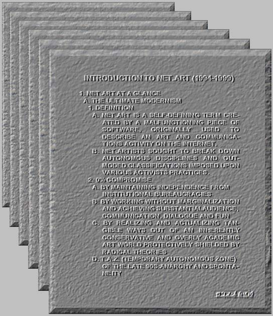

Post1: What is Net Art
Net art is an elusive and sometimes anarchic art form which uses the Internet as its primary material. Net artworks often draw on data from other Internet materials and websites, which helps give them their distinctive dynamics and transience. In other words, net art is a site-specific art form bound to its own presence and impact on the Internet. It is therefore necessary to create an online space such as this, where the art can be exhibited and experienced. A group of artists who have worked in the medium of Internet art since 1994. And the net.art movement arose in the context of the wider development of Internet art. The net.art developed in a context of cultural crisis in Eastern Europe in the beginning of the 1990s after the end of the Soviet Union and the fall of the Berlin Wall. The artists involved in net.art experiments are associated with the idea of a "social responsibility" that would answer the idea of democracy as a modern capitalist myth. The Internet, often promoted as the democratic tool par excellence, but largely participating in the rules of vested interests, is targeted by the net.artists who claimed that "a space where you can buy is a space where you can steal, but also where you can distribute". net.artists focus on finding new ways of sharing public space. As such, net.art is more of a movement and a critical and political landmark in Internet art history, than a specific genre. Early precursors of the net.art movement include the international fluxus (Nam June Paik) and avant-pop (Mark Amerika) movements. The avant-pop movement particularly became widely recognized in Internet circles from 1993, largely via the popular Alt-X site. Read More